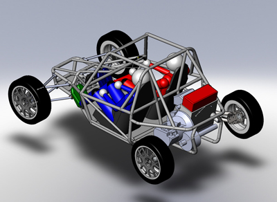

Introduction
CAD Modeling Software is basic tool in the hands of designer for 3D modeling. The use of solid modeling techniques allows for the automation of several difficult engineering calculations that are carried out as a part of the design process. Simulation, planning, and verification of processes such as machining and assembly were one of the main catalysts for the development of solid modeling. These techniques serve as the foundation for rapid prototyping, digital data archival and reverse engineering.

Problem Statement
You have to use your imagination skills to convert a 2D drawing into a 3D model
The problem statement will be provided on the spot.
Preliminary Round
- Preliminary Round consists of modelling a simple 3D part within 30 minutes.
- 10 teams will be shortlisted on the basis of degree of completeness, no. of commands used and time taken to model the part.
- The sole purpose of this round is short listing of the candidates only. Performance in this round will not affect the overall score in the final round.
Final Round
- Final Round consists of modelling an assembly within 2 hours.
- The skills tested in this round include Part modelling, Assembly design & Rendering.
- The marks distribution will be in the order of (Part modelling>Assembly Design>Rendering) so plan accordingly.
Rules
- Each team can have maximum of 2 participants.
- Single participants are also invited.
- A student can represent only one team.
- No extra time would be provided under any circumstances.
- The solid modelling is to be done in CATIA or SOLIDWORKS only.
- In case of discrepancy, the decision of the jury will be final and binding
Judging Criteria
- No. of commands used for solid modelling
- Accuracy of dimensions
- Degree of Completeness
- Presentation (example: Lighting and Background)
- Rendering (example: material, colour, render style etc.)
NOTE: Students have to confirm their participation along with their personal software preference on the following mail id:
asmeismu@ismu.ac.in
Contacts
- Vijay Kumar Singla
+91-8051192152
vijay_kumarsingla@asme.org
- Vinod Kumar
+91-9534080966
vinodkumar@asme.org